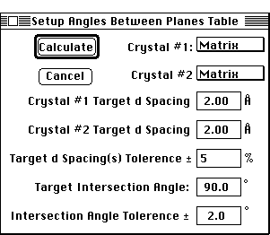

Distributed By: Virtual Labs
Angle Between Planes Setup Dialog Box:
PATH...File Menu:New:Tables:angle between planes...

Angles Between Planes Table Setup Dialog Box
The angle between planes dialog box allows the specification of parameters
for determining a set of potential planes which meet the given criteria.
The criteria consists of two target d-spacings, a d-spacing tolerance given
in percentage of d-space length, an intersection angle and an angular tolerance
given in degrees.
The only additional criteria is the ability to set both crystals independent
of the others. This allows the calculation of plane spacings and angle between
planes for two oriented crystals.
The information which is supplied by this function consists of the two d-spaces,
the angle between planes and the zone axis. When the two crystals are not
the same as the matrix crystal, the zone axis stated is for the matrix crystal.
Author: J.ames T.
Stanley
 Desktop
Manual:Dialog Boxes
Desktop
Manual:Dialog Boxes
Distributed By: Virtual Labs
Last Updated:1/12/96 Sat, Apr 27, 1996